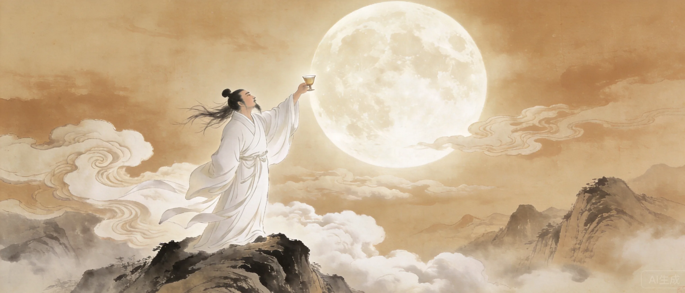
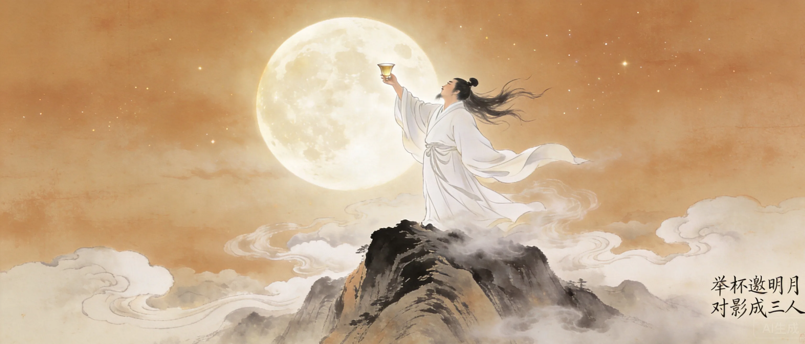
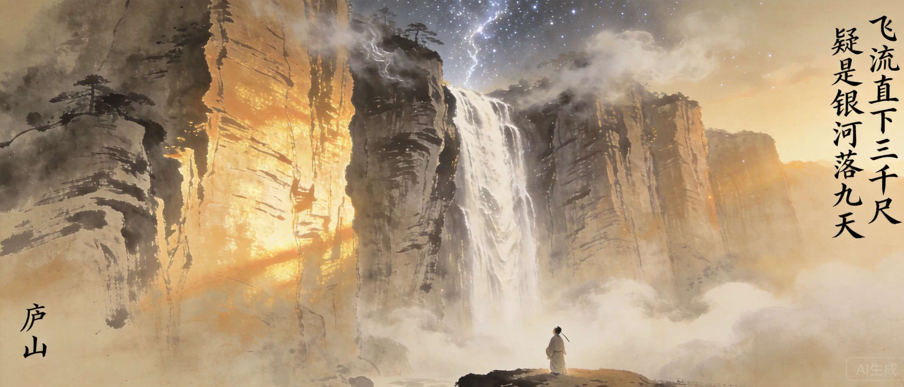
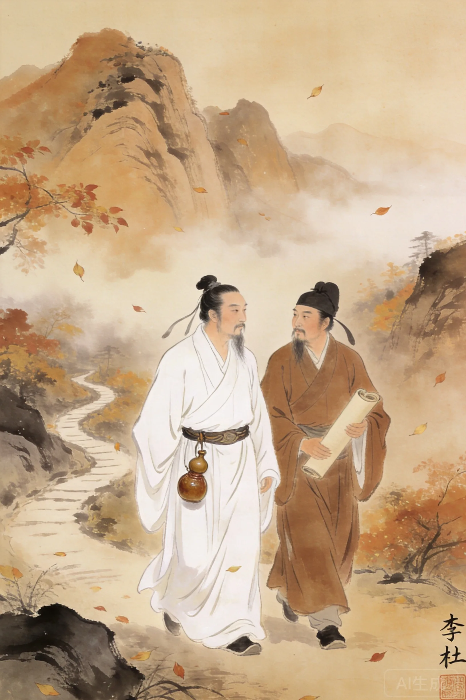
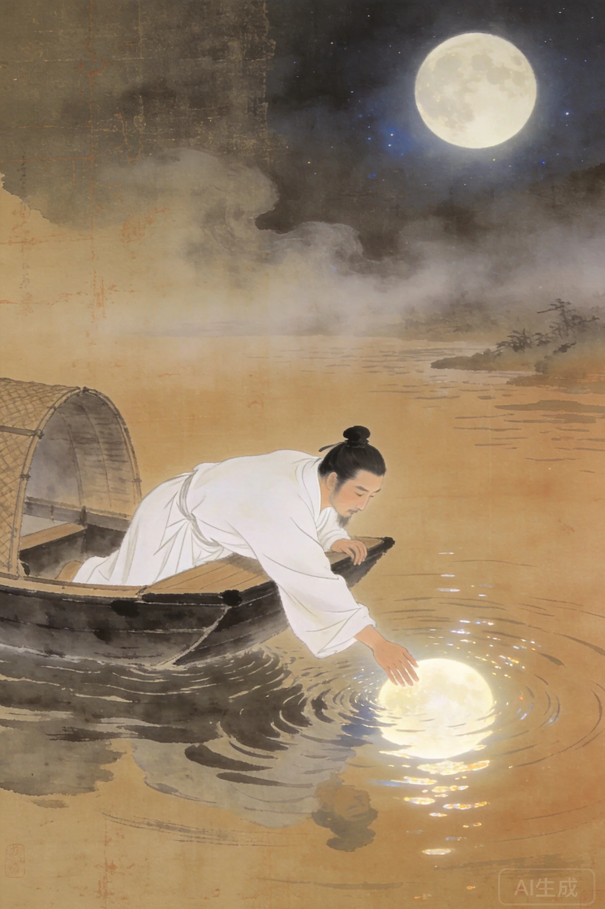

字太白，号青莲居士。祖籍陇西，生于西域碎叶。五岁随父迁居四川。
二十五岁仗剑去国，辞亲远游。
经贺知章推荐入长安，玄宗降辇迎接。
不肯摧眉折腰事权贵，自请还山。
在洛阳与杜甫相遇，中国文学史上最伟大的友谊。
安史之乱中入永王幕府。兵败流放夜郎。
流放途中遇赦：朝辞白帝彩云间。
卒于当涂，传醉后入水捉月而亡。


「君不见黄河之水天上来，奔流到海不复回。君不见高堂明镜悲白发，朝如青丝暮成雪。」开篇两组长句如黄河决堤，将时间、空间、生命喻为一体。全诗以酒为媒，表面是及时行乐的劝酒歌，深层是对时间流逝和生命短暂的终极抵抗。
「古来圣贤皆寂寞，惟有饮者留其名」——这是李白式的傲骨，也是李白式的悲哀。明知一切终将消逝，偏要以最狂放的态度度过此刻。严羽《沧浪诗话》评：他人作诗用笔想，太白但用胸口一喷即是。
**从《静夜思》开始读，然后立刻跳到《将进酒》。** 前一首让你知道李白也是人——他会想家，而且是用最简单的语言。第二首让你知道李白不只是人——他能把酒杯举到月亮的高度。读完这两首，你会理解为什么贺知章第一次见到他就解下了自己的金龟——因为他真的看起来不像地球上的人。
李白初到长安，贺知章读《蜀道难》惊叹：子非人世之人，是太白星精也！遂呼为谪仙人。当下解所佩金龟换酒，与李白痛饮。
李白醉中奉诏写诗，令高力士脱靴、杨贵妃捧砚。高力士怀恨，向贵妃进谗，贵妃阻挠玄宗授李白官职。杜甫后来感叹：天子呼来不上船，自称臣是酒中仙。'
传说李白月夜泛舟，醉后见水中月影，跃入水中捉月而亡。虽非史实，却完美诠释了李白——一个分不清天上月与水中月的人，一个把生命活成诗的人。
李白最深的情感不是豪放，是孤独。「花间一壶酒，独酌无相亲。举杯邀明月，对影成三人——中国文学史上最孤独的一场酒，只有一个人，一个月亮，一个影子，却营造了三人对饮的幻觉。
李白喝酒不是为了逃避，是为了打开另一种认知维度。清醒时看见的是世界，醉后看见的是宇宙——山可以飞流直下三千尺，人可以举杯邀明月对影成三人。严羽《沧浪诗话》说得好：「他人作诗用笔想，太白但用胸口一喷即是。」他把理性的闸门拆了，让感受直接化为语言。这是不可模仿的天赋——学李白的人都死在酒里，李白活在诗里。
一个分不清飞翔和坠落的人。李白的质地不是豪放——豪放是第二层。第一层是不设防：他不防人，不防时间，不防死亡。所以他敢让高力士脱靴，敢写「天子呼来不上船」，也敢在醉后伸手去捞水里的月亮。他的伟大和毁灭来自同一个源头：他从来没有学会在宇宙面前保护自己。

李杜是中国文学史上最著名的友谊。杜甫一生给李白写了十几首诗。李白只回了两首，但这恰恰体现了杜甫的赤诚。
第一个发现李白并命名为谪仙人的人。解金龟换酒的知音。
早年与李杜同游梁宋。安史之乱中李白落难，高适未施援手，二人友情因此破裂。
李白出生那年，阿拉伯帝国正席卷中亚。他去世前九年，怛罗斯之战打破了唐朝在西域的统治。李白的一生正好嵌在唐朝从极盛走向衰落的转折点上。同代人中，日本的《万叶集》正在编纂，世界文学史的两个高峰同时升起。
李白的影响超越了文学——他是中国人对「天才」一词的终极定义。余光中说他「绣口一吐就半个盛唐」。他的诗被翻译成数十种语言，埃兹拉·庞德通过翻译李白改变了英语现代诗。千年后，每一个喝醉酒说「我也可以」的人，都在模仿李白。
